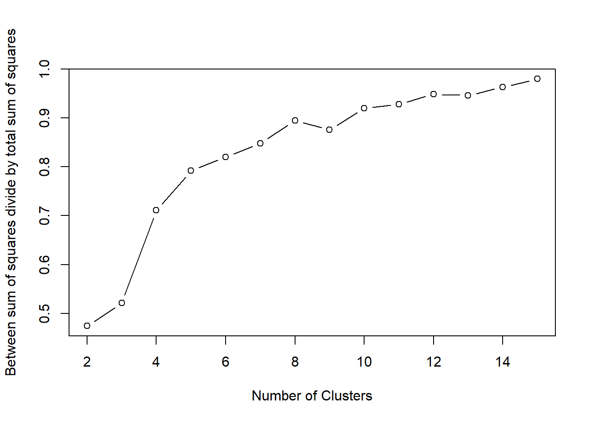
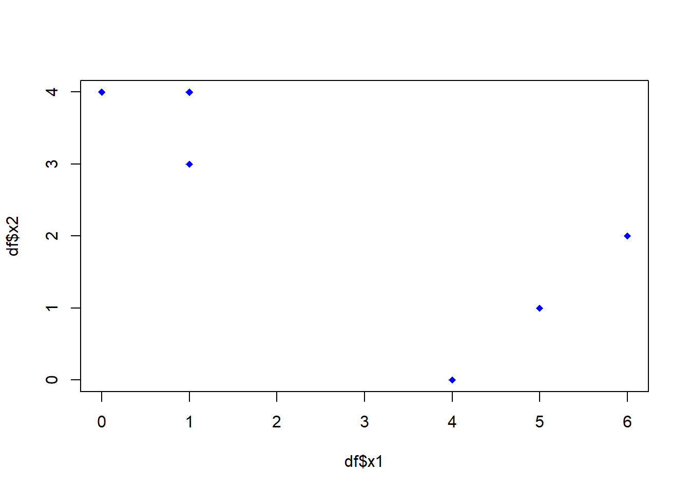

pw7
K means
Trang Thomas
2020-11-27 18:00:22
K-means clustering
2)
## Loading required package: knitr| Points | Wins | Draws | Loses | Goals.scored | Goals.conceded | Difference.goals | Points.per.game | red.cards | yellow.cards | clean.sheets.percentage | failed.to.score.percentage | shots.per.match.average | shots.on.goal.per.match.average | ball.possession.per.game.average | sum.offside.in.attack | sum.offside.in.defense | corners.per.game.average | fouls.for.sum | fouls.against.sum | |
|---|---|---|---|---|---|---|---|---|---|---|---|---|---|---|---|---|---|---|---|---|
| Paris-SG | 93 | 29 | 6 | 3 | 108 | 29 | 79 | 2.45 | 6 | 66 | 47 | 8 | 16.05 | 6.74 | 63.34 | 98 | 99 | 6.71 | 139 | 105 |
| Monaco | 80 | 24 | 8 | 6 | 85 | 45 | 40 | 2.11 | 3 | 70 | 37 | 11 | 15.68 | 3.18 | 57.68 | 93 | 90 | 6.39 | 115 | 112 |
## [1] 20There are 20 features in this Dataset which are represented by the number of columns
PointCards
5)
## K-means clustering with 2 clusters of sizes 16, 4
##
## Cluster means:
## ligue1.Points ligue1.yellow.cards
## 1 44.75 71.5625
## 2 82.00 71.2500
##
## Clustering vector:
## [1] 2 2 2 2 1 1 1 1 1 1 1 1 1 1 1 1 1 1 1 1
##
## Within cluster sum of squares by cluster:
## [1] 2180.938 256.750
## (between_SS / total_SS = 64.6 %)
##
## Available components:
##
## [1] "cluster" "centers" "totss" "withinss" "tot.withinss"
## [6] "betweenss" "size" "iter" "ifault"cluster represents a vector with all rows of the df and to which cluster each of point is allocated
centers is a matrix of the coordinates of each cluster’s center
withinss is for a cluster, the sum of squares from the cluster centroid to each observation
tot.withinss is the sum of the withinss of each cluster
totss is the total sum of square
betweenss is the total sum of square minus the tot.withinss
size is the number of observations for each cluster
iter is the number of outer iterations
ifault is for problems
6)
## ligue1.Points ligue1.yellow.cards
## 1 44.75 71.5625
## 2 82.00 71.2500coordinates of the 2 clusters centers are (44.75,71.5625) and (82.00,71.25)
7) et 8)
plot(pointCards$ligue1.Points,pointCards$ligue1.yellow.cards,col=km$cluster,pch=19,cex=1.2)
points(km$centers,pch=4,cex=3,lwd=3,col=c('black','red'))
text(pointCards$ligue1.Points,pointCards$ligue1.yellow.cards,labels=row.names(ligue1),col=km$cluster)We can see that the leader PSG don’t have a lot of yellow card so they are not that agressive The agressivity doesn’t tell that much about a team’s level because Marseille is the third but are very agressive and the less agressive team is in last teams Crosses represent centers
9)
km3 <- kmeans(pointCards,centers=3,iter.max = 20)
km4 <- kmeans(pointCards,centers=4,iter.max = 20)
km5 <- kmeans(pointCards,centers=5,iter.max = 20)
par(mfrow=c(2,1),cex=0.6)
par(fig=c(0,1,0.5,1))
plot(pointCards$ligue1.Points,pointCards$ligue1.yellow.cards,col=km3$cluster,pch=19,cex=1.2,main='3 clusters')
points(km3$centers,pch=4,cex=3,lwd=3,col=c('black','red','green'))
text(pointCards$ligue1.Points,pointCards$ligue1.yellow.cards,labels=row.names(ligue1),col=km3$cluster)
par(fig=c(0,1,0,0.5), new=TRUE)
plot(pointCards$ligue1.Points,pointCards$ligue1.yellow.cards,col=km4$cluster,pch=19,cex=1.2,main='4 clusters')
points(km4$centers,pch=4,cex=3,lwd=3,col=c('black','red','green','blue'))
text(pointCards$ligue1.Points,pointCards$ligue1.yellow.cards,labels=row.names(ligue1),col=km4$cluster)10)
wss <- (nrow(ligue1)-1)*sum(apply(ligue1,2,var))
for (i in 2:15) wss[i] <- sum(kmeans(ligue1,
centers=i)$withinss)
plot(1:15, wss, type="b", xlab="Number of Clusters",
ylab="Within groups sum of squares")
11)
## [1] 0.79## [1] 0.862wss <- (nrow(ligue1)-1)*sum(apply(ligue1,2,var))
for (i in 2:15) wss[i] <- (kmeans(ligue1,centers=i)$betweenss)/(kmeans(ligue1,
centers=i)$totss)
plot(2:15, wss[-1], type="b", xlab="Number of Clusters",
ylab="Between sum of squares divide by total sum of squares")
So high similarity in a cluster = low value of within_ss (variance in a cluster)
low similarity between clusters = high between_ss (variance between clusters)
the goal is to maximize the value ( between_ss/total_ss)
On the graphs, we can see that we should take 6 or 8 clusters because this is where we the elbow is showing
Ligue 1
13)
14)
##
## 1 2 3
## 8 4 8##
## 1 2 3
## 8 8 4In both dataframes we have 20 observations
But the clusters are differents and not composed the same way, in the scaled df
PSG is alone in one cluster due to the fact that they were much more better than any other team
That’s how we got clusters with so much teams in it with the scaled df
PCA
15) et 16)
## Importance of components:
## Comp.1 Comp.2 Comp.3 Comp.4 Comp.5
## Standard deviation 3.5625641 1.4189896 1.24505724 1.07174292 0.87228723
## Proportion of Variance 0.6345931 0.1006766 0.07750838 0.05743164 0.03804425
## Cumulative Proportion 0.6345931 0.7352697 0.81277809 0.87020973 0.90825398
## Comp.6 Comp.7 Comp.8 Comp.9 Comp.10
## Standard deviation 0.75515507 0.69719030 0.60689769 0.398425771 0.314733156
## Proportion of Variance 0.02851296 0.02430372 0.01841624 0.007937155 0.004952848
## Cumulative Proportion 0.93676694 0.96107066 0.97948690 0.987424054 0.992376902
## Comp.11 Comp.12 Comp.13 Comp.14
## Standard deviation 0.281317695 0.193479074 0.164713779 0.0788496294
## Proportion of Variance 0.003956982 0.001871708 0.001356531 0.0003108632
## Cumulative Proportion 0.996333884 0.998205592 0.999562123 0.9998729866
## Comp.15 Comp.16 Comp.17 Comp.18
## Standard deviation 0.0451501280 0.0223692182 1.163093e-03 6.714858e-09
## Proportion of Variance 0.0001019267 0.0000250191 6.763926e-08 2.254466e-18
## Cumulative Proportion 0.9999749133 0.9999999324 1.000000e+00 1.000000e+00
## Comp.19 Comp.20
## Standard deviation 0 0
## Proportion of Variance 0 0
## Cumulative Proportion 1 1It is important to scale the data when we apply a PCA
Because we have to maximize the variance in the data in order to project the data in many dimensions
and transform the vector so that we have a unit norm
THe 5 first components gather 91% of information
The 2 first PC gather 63% and 10 %
Variables that contribute the most of PC1 are wins,difference goals,shots ect
and variables that contribute for PC2 are Draws, yellow cards;red cards, fouls ect
For example Paris has a lot of wins, red cards and fouls against sum
Applying PCA on the normal and the scaled dataset give the same result
We don’t need to apply on the scaled dataset because all the teams are evaluated on the same rules, in other termes values are already scaled
17)
## Loading required package: factoextra## Loading required package: ggplot2## Welcome! Want to learn more? See two factoextra-related books at https://goo.gl/ve3WBafviz_cluster(km.ligue1, data = ligue1, # km.ligue1 is where you stored your kmeans results
palette = c("red", "blue", "green"), # 3 colors since 3 clusters
ggtheme = theme_minimal(),
main = "Clustering Plot"
)We can see 3 clusters as stated when we applied k means on ligue 1 Df
The plot colors each groups
18)
## [1] 0.6643269## [1] 0.7448907fviz_cluster(kmPCA, data = ligue1, # km.ligue1 is where you stored your kmeans results
palette = c("red", "blue", "green"), # 3 colors since 3 clusters
ggtheme = theme_minimal(),
main = "Clustering Plot"
)The previous visualisation is with all the variables showing their contribution on each PC
We apply k means on the matrix concerning PC1 and PC2
These 3 clusters look like the previous clusters so PCA and Kmeans in this case are similar
Implementing k means
19)
df<- data.frame("x1" = c(1,1,0,5,6,4), "x2" = c(4,3,4,1,2,0))
#kmdf<-kmeans(df,centers=2,iter.max = 3)
#plot(df$x1,df$x2,col=km$cluster,pch=18)
#points(kmdf$centers,pch=5,cex=3,lwd=3,col=c('black','red'))
#text(df$x1,df$x2,labels=row.names(df),col=km$cluster,adj = c(df$x1+0.2,df$x2))
plot(df$x1,df$x2,col='blue',pch=18)
Here we plot x1 in function of x2
20)
set.seed(1234)
df['label']=sample(c(1,2))
plot(df$x1,df$x2,col=df$label,pch=18)
text(df$x1,df$x2,labels=row.names(df),col=df$label,adj = c(df$x1+0.15,df$x2))here we randomly gave a label to each oberservation
21)
cluster1=subset(df, label==1)
xcluster1<-mean(cluster1$x1)
ycluster1<-mean(cluster1$x2)
plot(df$x1,df$x2,col=df$label,pch=18)
text(df$x1,df$x2,labels=row.names(df),col=df$label,adj = c(df$x1+0.15,df$x2))
points(xcluster1,ycluster1,pch=5,cex=3,lwd=3)
centroid1<-data.frame('x1'=c(xcluster1),'x2'=c(ycluster1),'label'=cluster1$label)
cluster2=subset(df, label==2)
xcluster2<-mean(cluster2$x1)
ycluster2<-mean(cluster2$x2)
points(xcluster2,ycluster2,pch=5,cex=3,lwd=3,col='red')the square represents the centroid of each cluster To have this center we have to do the mean of observations of each clusters
22)
euc.dist <- function(obs1, obs2){res <-sqrt(((obs2[1,1] - obs1[1,1]) ^ 2)+((obs2[1,2]-obs1[1,2])^2))
return(res)
}
euc.dist(df[4,],df[1,])## [1] 5obs1 and obs2 reprensent coordinates of the observation
23)
for(i in 1:dim(df)[1])
{
if(euc.dist(df[i,],centroid1[1,])>euc.dist(df[i,],centroid2[1,]))
{
df[i,]['label']=centroid2[1,]['label']
}
else
{
df[i,]['label']=centroid1[1,]['label']
}
}
dfWe have to test check the distance between of each observation and each centroid
The centroid which is the closest to each observation gives it his label
24)
while((euc.dist(centroid1[1,], centroid1[1,])>0.001) & (euc.dist(centroid2[1,], centroid2[1,])>0.001))
{
cluster1=subset(df, label==1)
xcluster1<-mean(cluster1$x1)
ycluster1<-mean(cluster1$x2)
plot(df$x1,df$x2,col=df$label,pch=18)
text(df$x1,df$x2,labels=row.names(df),col=df$label,adj = c(df$x1+0.15,df$x2))
points(xcluster1,ycluster1,pch=5,cex=3,lwd=3)
centroid1<-data.frame('x1'=c(xcluster1),'x2'=c(ycluster1),'label'=cluster1$label)
cluster2=subset(df, label==2)
xcluster2<-mean(cluster2$x1)
ycluster2<-mean(cluster2$x2)
points(xcluster2,ycluster2,pch=5,cex=3,lwd=3,col='red')
centroid2<-data.frame('x1'=c(xcluster2),'x2'=c(ycluster2),'label'=cluster2$label)
for(i in 1:dim(df)[1])
{
if(euc.dist(df[i,],centroid1[1,])>euc.dist(df[i,],centroid2[1,]))
{
df[i,]['label']=centroid2[1,]['label']
}
else
{
df[i,]['label']=centroid1[1,]['label']
}
}
}we have to do a while loop to verify that from one iteration to the next iteration, the euclidian distance between x and y of the centroid is not superior to 0.001, if it is the case we compute question 21 and 23 until the values of centroid are stable and we update at every iteration all values
25)
Hierarchical clustering on Iris DataSet
9)
## Number of cases in table: 40
## Number of factors: 2
## Test for independence of all factors:
## Chisq = 48.18, df = 4, p-value = 8.649e-10
## Chi-squared approximation may be incorrect## [1] 0.75
We have a high level of identity is almost perfect
The p value is very low and the accuracy is 0.925 which is very high
10)
disIris<-dist(irisdf[,1:4])
dendro.IrisAverage<-hclust(disIris,'average')
plot(dendro.IrisAverage)
groupsIrisAverage<-cutree(dendro.IrisAverage,3)
plot(dendro.IrisAverage)
rect.hclust(dendro.IrisAverage,k=3,border = c('blue','red','green'))res10Average<-table(groupsIrisAverage,irisdf[,5])
accuracyAverage=(res10Average[2,2]+res10Average[1,1]+res10Average[3,3])/sum(res10Average)
accuracyres## [1] 0.75dendro.IrisComplete<-hclust(disIris,'complete')
plot(dendro.IrisComplete)
groupsIrisComplete<-cutree(dendro.IrisComplete,3)
plot(dendro.IrisComplete)
rect.hclust(dendro.IrisComplete,k=3,border = c('blue','red','green'))res10Complete<-table(groupsIrisComplete,irisdf[,5])
accuracyAverage=(res10Complete[2,2]+res10Complete[1,1]+res10Complete[3,3])/sum(res10Complete)
accuracyres## [1] 0.75##
## groupsIrisComplete setosa versicolor virginica
## 1 50 0 0
## 2 0 23 49
## 3 0 27 1dendro.IrisSingle<-hclust(disIris,'single')
plot(dendro.IrisSingle)
groupsIrisSingle<-cutree(dendro.IrisSingle,3)
plot(dendro.IrisSingle)
rect.hclust(dendro.IrisSingle,k=3,border = c('blue','red','green'))res10Single<-table(groupsIrisSingle,irisdf[,5])
accuracyAverage=(res10Single[2,2]+res10Single[1,1]+res10Single[3,3])/sum(res10Single)
accuracyres## [1] 0.75##
## groupsIrisSingle setosa versicolor virginica
## 1 50 0 0
## 2 0 50 48
## 3 0 0 2For the average, the accuracy is 0.91 For the complete, the accuracy is also 0.91 For the single, the accuracy is is also 0.91 We always have the same accuracy but we have different confusion matrices